Kisarazu, Chiba: things to do, food and stays
Kisarazu · Chiba
Kisarazu
Highlighted on the Chiba map.
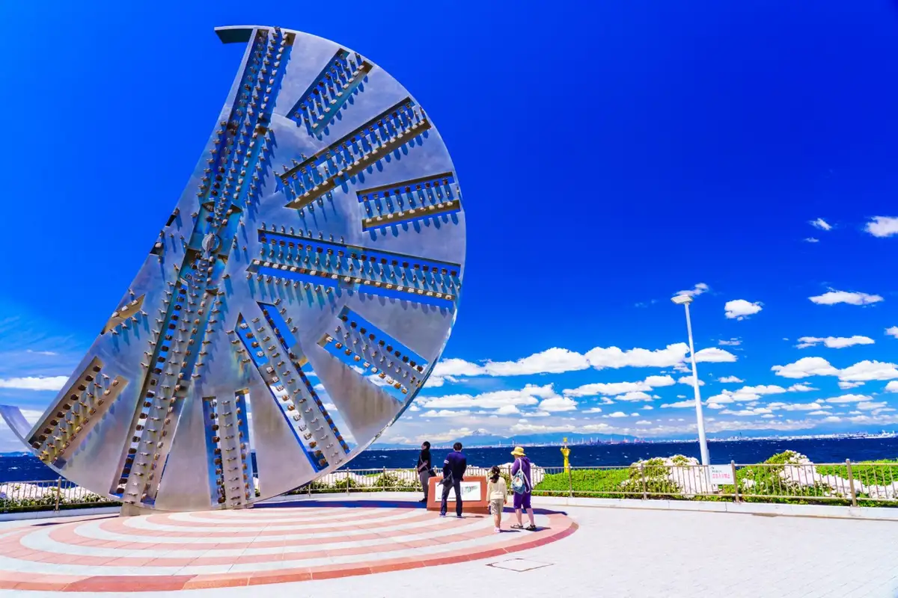
Stay
龍宮城スパ・ホテル三日月 富士見亭
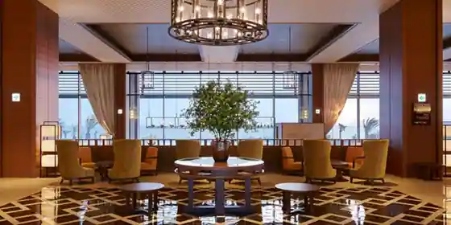
Ryugujo Supa Hotel Mikazuki Fujimi Tei
Hotel in Kitahama, Kisarazu with open-air baths.
鳥居崎倶楽部 HOTEL＆SEAFOODS
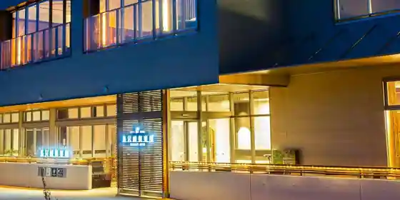
Tori Saki Kurabu HOTEL&SEAFOODS
木更津ワシントンホテル
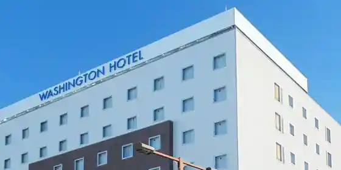
Kisarazu Washington Hotel
オールドルーキーサウナホテル木更津金田
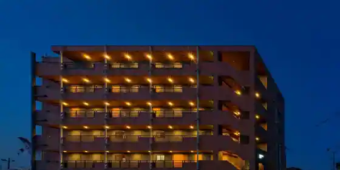
Orudorukisauna Hotel Kisarazu Kaneda
Hotel in Egawa, Kisarazu with a sauna.
オークラ アカデミアパーク ホテル
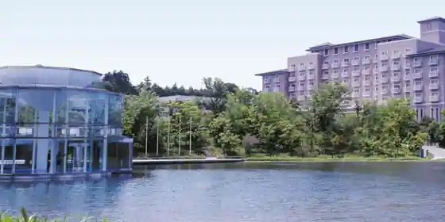
Okura Akademia Park Hotel
Hotel in Kazusakamatari, Kisarazu with breakfast available.
ホテルルートイン木更津
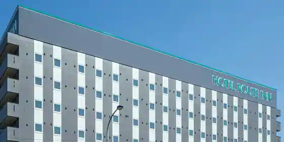
Hotel Route Inn Kisarazu
Hotel at Jinko Onsen in Kiyomidai, Kisarazu with buffet meals and breakfast available.
Tabist ホテル銀河 木更津
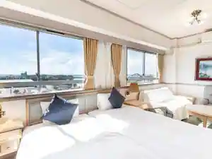
Tabist Hotel Ginga Kisarazu
東京ベイプラザホテル
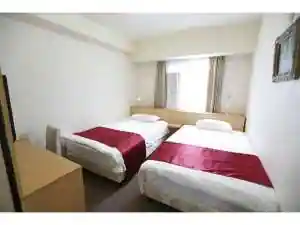
Tokyo Bei Plaza Hotel
Hotel in Nitta, Kisarazu with business travelers.
木更津ベイタウンホテル
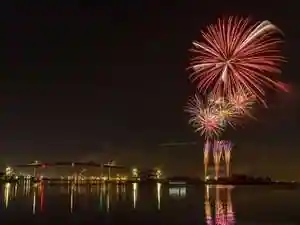
Kisarazu Beitaun Hotel
Hotel in Fujimi, Kisarazu with breakfast available and parking.
ファミリーロッジ旅籠屋・木更津港店
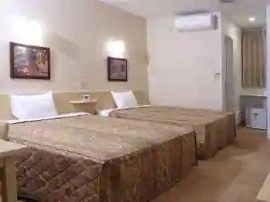
Famiri Lodge Hatago Ya Kisarazu Minato
Mountain lodge in Fujimi, Kisarazu with breakfast available and family-friendly stays.
ホテルロイヤルガ－デン木更津
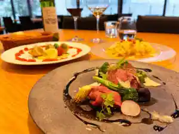
Hotel Roiyaruga - Den Kisarazu
Hotel in Yamato, Kisarazu with breakfast available and parking; 3-minute walk from Kisarazu Station.
KOMA HOUSE
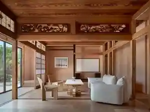
KOMA HOUSE
Inn in Bunkyo, Kisarazu with a renovated traditional house.
Dining
松戸富田製麺 三井アウトレットパーク木更津店
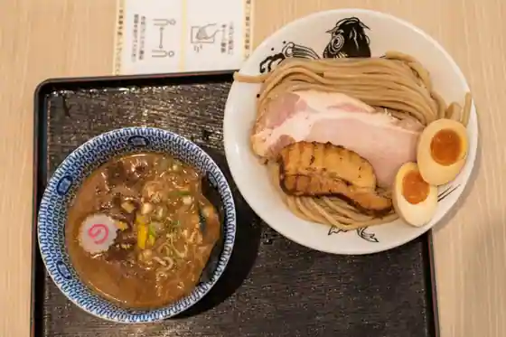
Matsudo Tomita Seimen Mitsui Autoretto Park Kisarazu
三代目 沖食堂
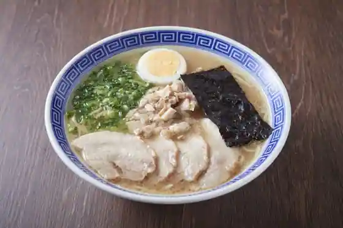
Sandaime Oki Shokudo
三好家
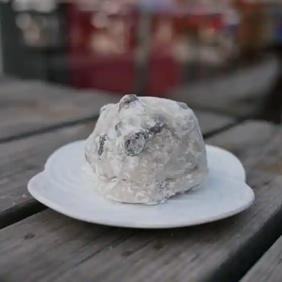
Miyoshi Ie
九州ラーメン友理
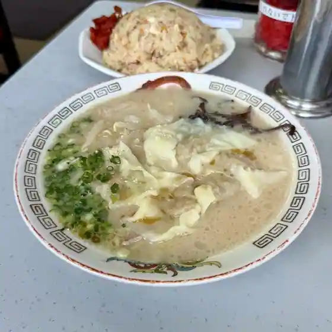
Kyushu Ramen Yuri
IDEBOK Sweets Cafe 海ほたる店
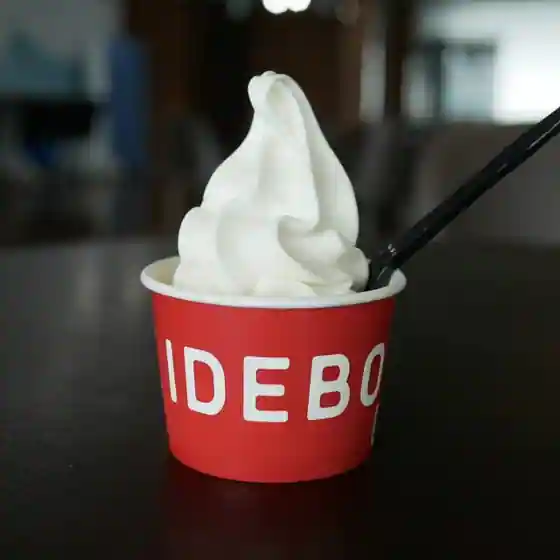
IDEBOK Sweets Cafe Umi Hotaru
横浜家系ラーメン林家 木更津本店
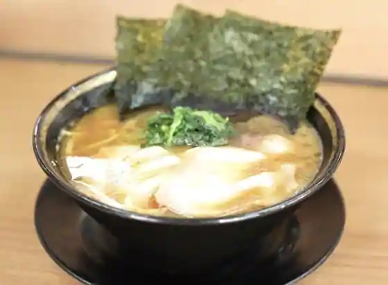
Yokohama Kakei Ramen Hayashiya Kisarazu Hon
かもめ食堂
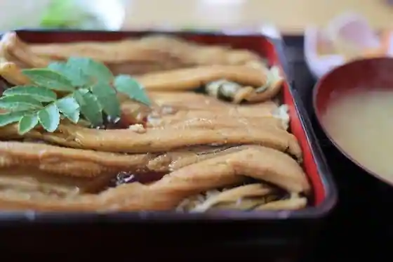
Kamome Shokudo
鮨 つどい
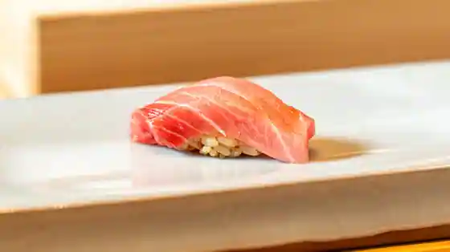
Sushi Tsudoi
KURKKU FIELDS perus
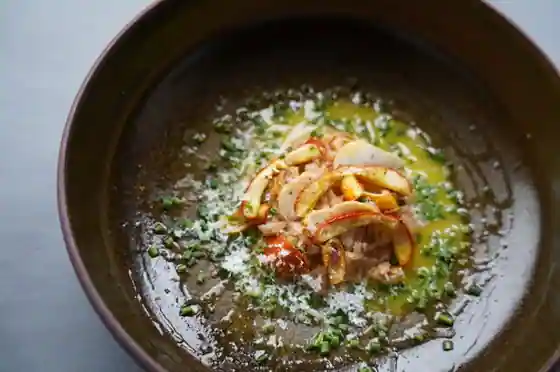
KURKKU FIELDS perus
千葉房総 麺のマルタイ
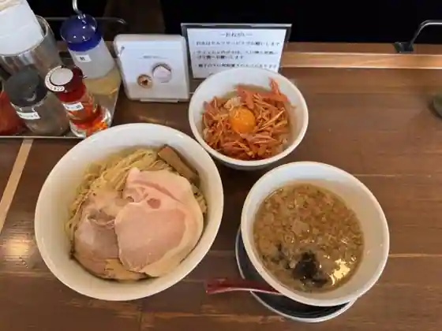
Chiba Boso Men No Marutai
ラビン
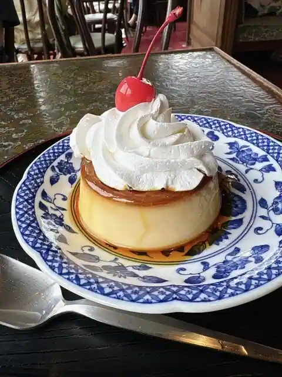
Rabin
木更津 丿貫
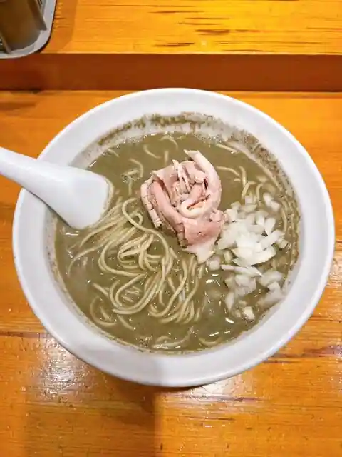
Kisarazu Hetsu Kan
&TREE
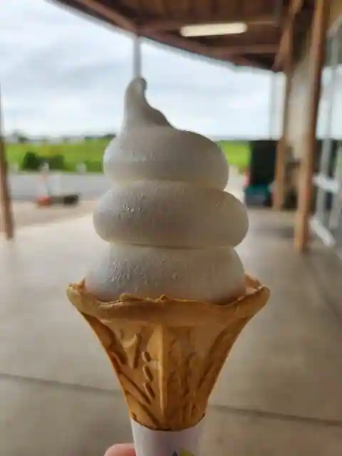
&TREE
ラーメン富士屋 木更津店
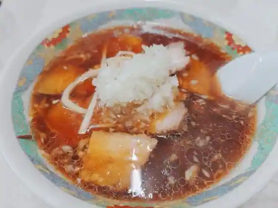
Ramen Fujiya Kisarazu
アイドル
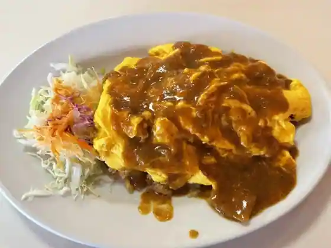
Aidoru
ごくりっ
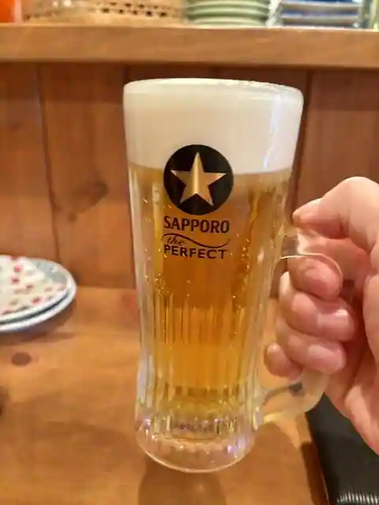
Gokuritsu
手打ちそば割烹 うた屋
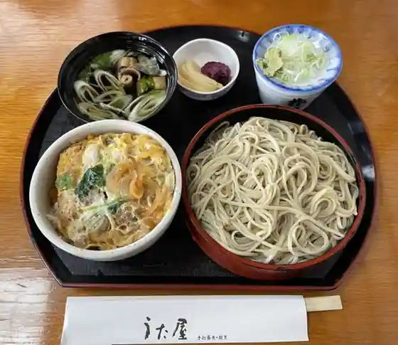
Teuchi Chisoba Kappo Uta Ya
回転寿司 やまと 木更津店
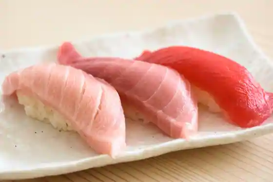
Kaitenzushi Yamato Kisarazu
食事処 やまよ
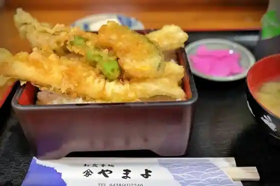
Shokuji Tokoro Yamayo
波市
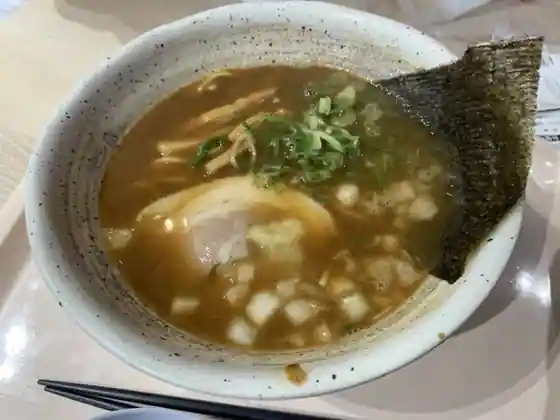
Nami Shi
ジェラート ピケ カフェ クレープリー 三井アウトレットパーク木更津店
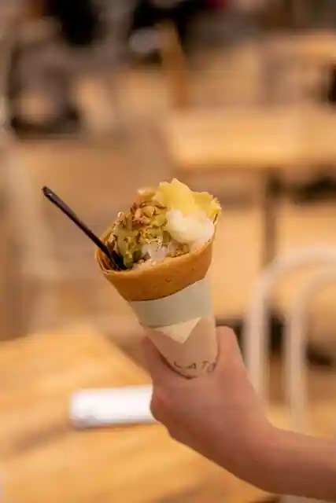
Jierato Pike Cafe Kurepuri Mitsui Autoretto Park Kisarazu
マザー牧場 カフェアンドソフトクリーム 三井アウトレットパーク木更津店
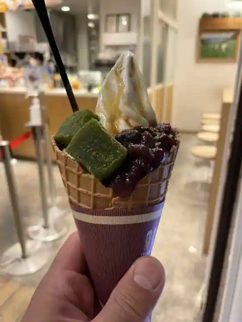
Maza Bokujo Cafe Andosofutokurimu Mitsui Autoretto Park Kisarazu
ヴェンキ 三井アウトレットパーク木更津店
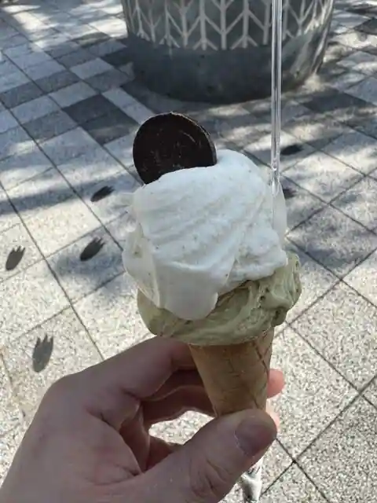
Venki Mitsui Autoretto Park Kisarazu
茶想 もりた園 木更津店
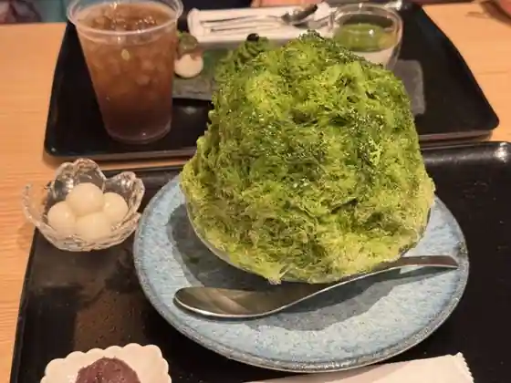
Cha So Morita Sono Kisarazu
Sights
Umi Hotaru Parking Area
Mitsui Autoretto Park Kisarazu
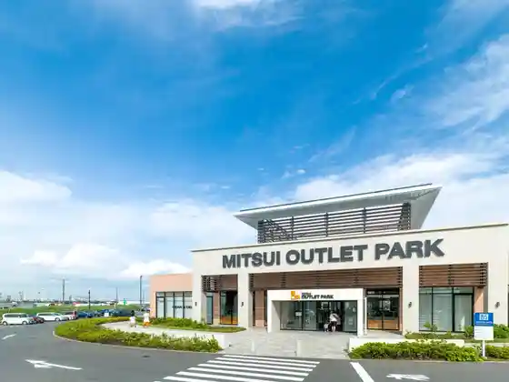
Roadside Station Kisarazu Umakuta Village
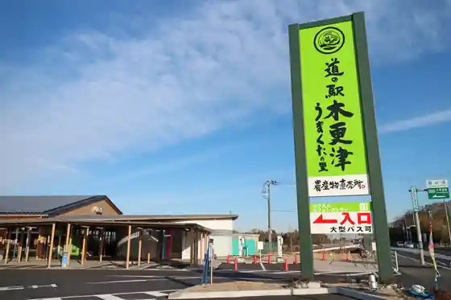
Kimisarazu Tawa / Ota Yama Park
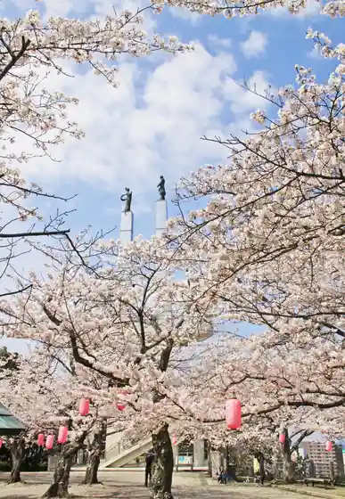
KURKKU FIELDS
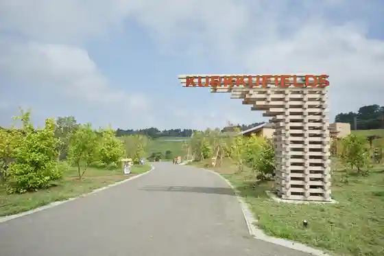
Kisarazu Kanransha Park Kisarapia
Torii Saki Seaside Park
Egawa Coast
Porushie Ekusuperiensu Center Tokyo
Yatsurugi Hachiman Shrine
Kisarazu CAMP ORGANIC FIELD in Mitate
Chiiba Kun Bussan Kan Umi Hotaru Mise
ETOWA KISARAZU (Etowa Kisarazu)
Hisatsu Kan Coast
Takakura Nosambutsu Chokubai Center
Nihonsei Tetsu (Kabu) Higashinihon Seitetsusho Kimitsu Chiku
Takakura Kannon (Takakura Tera)
Kazusa Aku
Chiiba Kun Plaza - Chibaken Kankojoho Kan
Kisarazu Coast
Kisarazu Kyodo Museum Kin no Suzu
Shosho Tera
Tourist Farm Bii Mai Berii
Kaneda Mitate Coast
Ushigome Coast
Koeki Zaidanhojin Kazusa DNA Kenkyusho
Komyo Tera
JA Kisarazu Seikatsu Kan Umakuta Mise
Indo Uota Farm
JA Kisarazu Seikatsu Kan